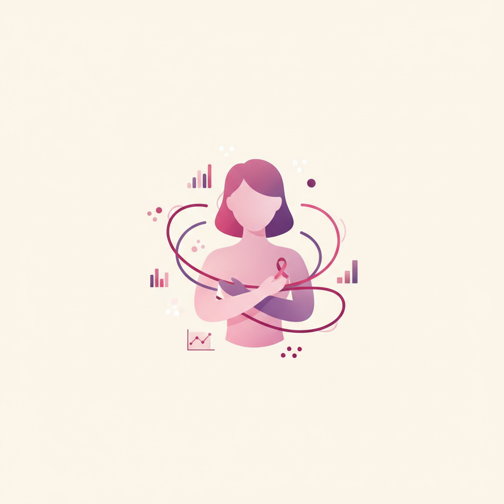
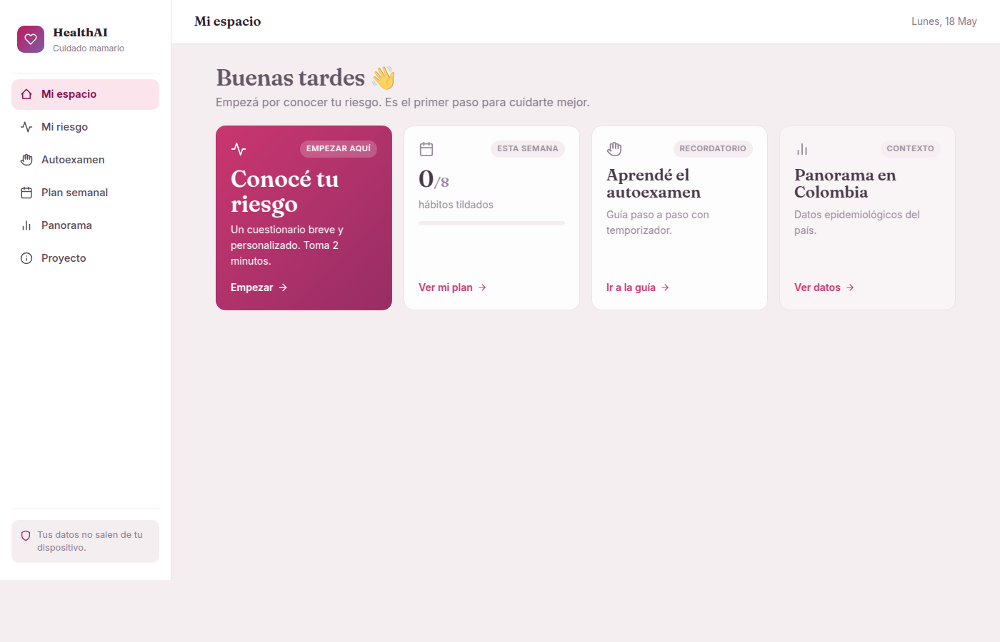
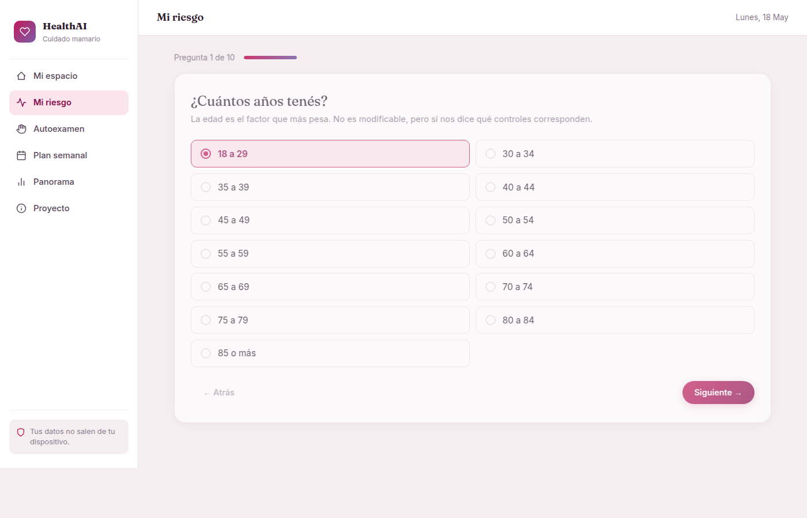
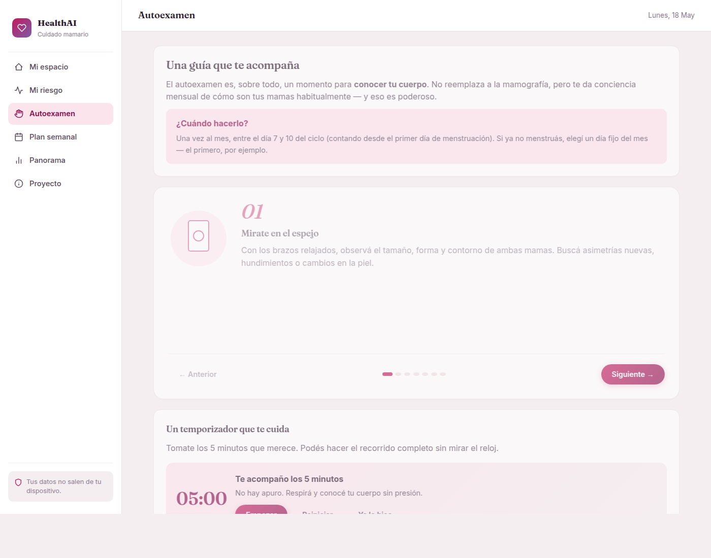
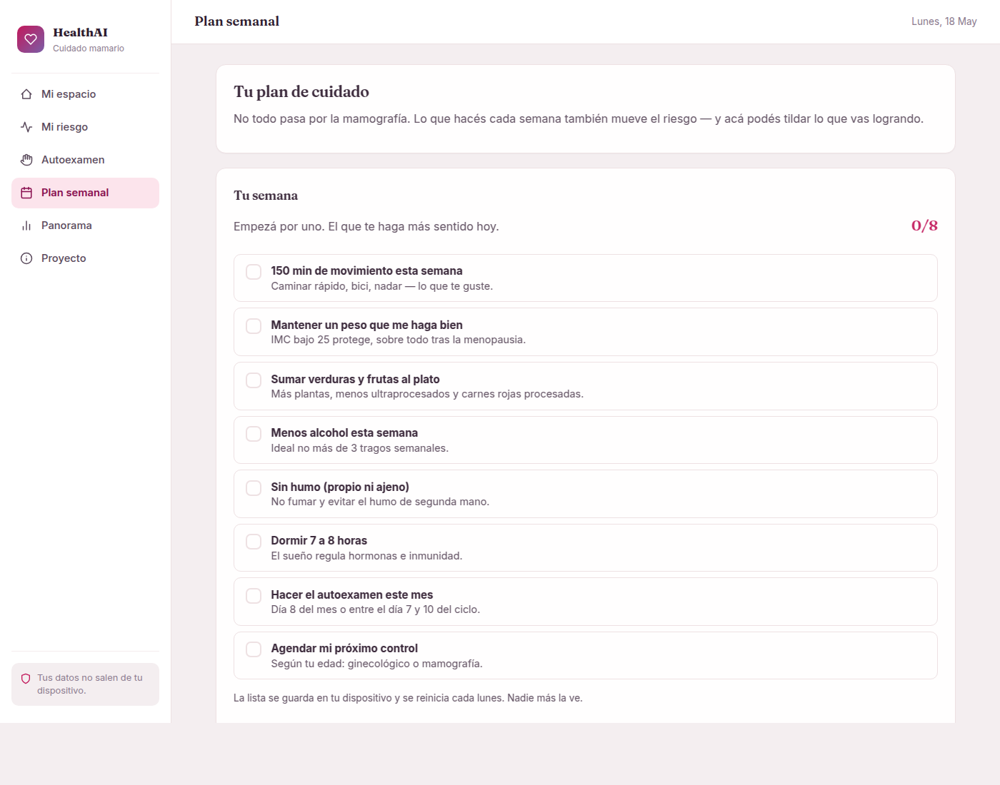
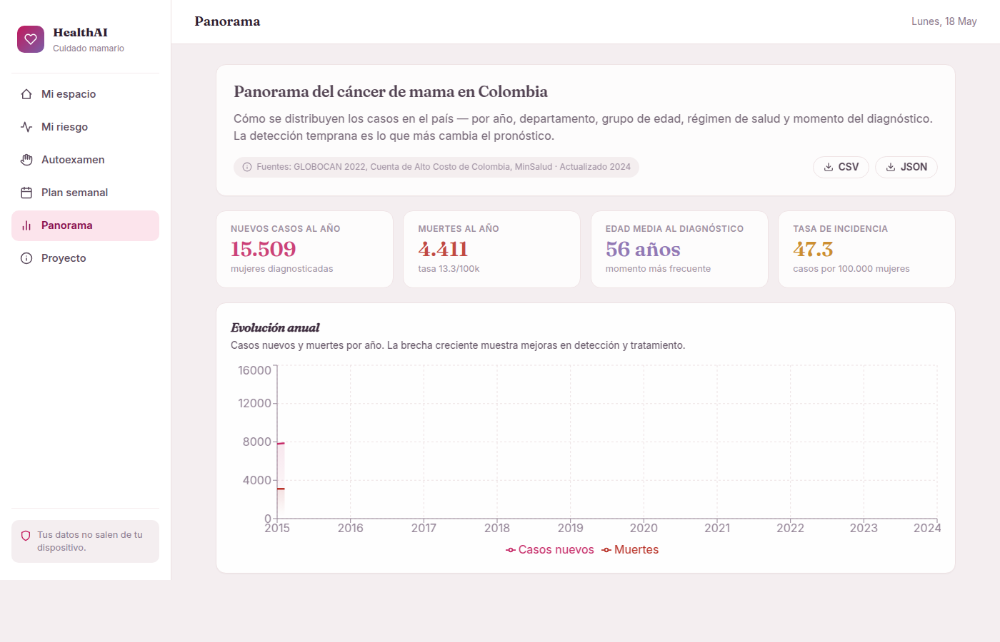
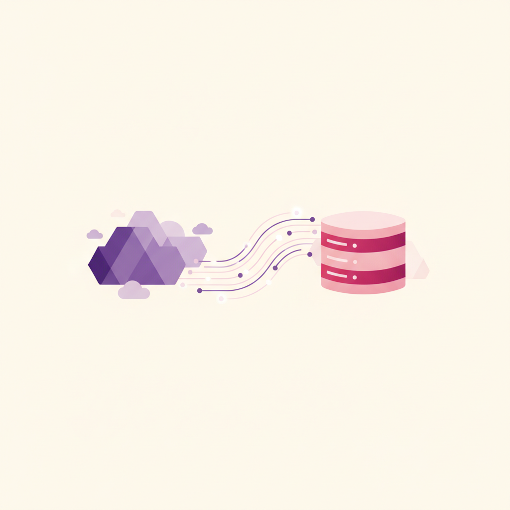

Sistema de predicción de riesgo de cáncer de mama basado en una arquitectura de Big Data sobre AWS.
Universidad de San Buenaventura · Ingeniería de Sistemas
bigdata.agustinynatalia.site
12 mujeres mueren por día. Y la sobrevida a 5 años depende casi totalmente del momento del diagnóstico.

Cuando los datos cumplen estas condiciones, las herramientas tradicionales — una base relacional, un Excel, un servidor único — dejan de servir.
+6M de mamografías. Pasa lo que entra en RAM → Parquet + PySpark.
Batch para entrenar + streaming con Kinesis para capturar.
4 fuentes heterogéneas con esquemas distintos: BCSC, CAC, SIVIGILA, GLOBOCAN.
Validación con Pydantic, cita explícita de fuentes, datos descargables.
La quinta es la más importante: si no termina en algo útil, no sirvió.
Capa lenta para procesar históricos (batch en Spark) + capa rápida para capturar datos recientes (streaming en Kinesis). El data lake en S3 es el punto de unión.

bigdata.agustinynatalia.site · Mi espacioToda la persistencia está en localStorage del navegador. La información de salud es sensible y no la necesitamos para que la app funcione.
Si capturáramos una pregunta que el modelo no usa, sería deshonesto. Si nos faltara una variable que el modelo necesita, sería inválido.

Pregunta 1 de 10 · barra de progreso · selección con feedbackMensajes educativos que rotan: "Consultando patrones de más de 6 millones de mamografías...", "Pensando en los factores que más pesan en tu caso..."
Medidor con la probabilidad y el nivel: Bajo · Medio · Alto. Color que cambia según el nivel.
Texto en lenguaje natural: qué significa ese nivel para esta persona en particular.
Cada factor explica cómo influyó. "Tu edad (50-54) aumenta moderadamente el riesgo..."
Mientras vemos esta pantalla, la predicción ya viajó por Kinesis y está en S3 bajo raw/predictions/2026/05/18/. La próxima vez que reentrenemos, va a estar disponible.
Cada fila no es una mamografía individual — es una combinación de factores con una columna count. Las operaciones tienen que ser ponderadas: una fila con count=5000 pesa 5000 veces más que una con count=1.
El dataset usa 9 para "valor desconocido". Si lo dejamos, el modelo aprende que "9" es real y rompe. Solución: imputar por la moda ponderada para ordinales; dejar "desconocido" como clase separada para binarias.
01_exploracion.ipynb — Consolidación con Pandas
3 CSV originales → 1 DataFrame consolidado → imputación → export a Parquet (columnar comprimido).
02_eda.ipynb — Hallazgos clave del análisis
La incidencia crece fuerte después de los 50. Densidad BI-RADS d casi duplica el riesgo vs BI-RADS a. Solo 5-10% de los casos tiene historial familiar directo.
Si el 95% de las mamografías son negativas, un modelo que siempre dice "negativo" tiene 95% de accuracy y es inútil.
Mide la capacidad de separar las clases independientemente del umbral elegido. La métrica reina en clasificación desbalanceada.
De los que predijo positivos, cuántos lo eran. Importa para evitar mandar gente a controles innecesarios.
De los positivos reales, cuántos detectó. Lo que más importa en salud: preferible un falso positivo que un falso negativo.
03_modelo.ipynb — Entrenamiento
Comparamos regresión logística vs random forest con class_weight=balanced. RF gana en interacciones no lineales. Ajustamos el umbral para favorecer recall.
04_spark_s3.ipynb — Distribuido
PySpark sobre S3 directo. Si mañana el dataset crece a 50M de filas, el código no cambia: escalamos la máquina.
3 prefijos: raw/ (datos crudos), clean/ (Parquet listo), models/ (.pkl).
Convención estándar — trazabilidad total.
Stream gestionado. Bufferiza hasta 5 MB o 60 s. Comprime en GZIP y particiona por fecha automáticamente.
Near real-time: < 1 min al data lake.
t3.medium · Ubuntu 22.04. Apagada la mayor parte del tiempo — solo se prende para procesar (horas por semana).
Jupyter por SSH tunneling.
Políticas mínimas por servicio. La EC2 solo lee el bucket. El backend solo escribe al stream.
Si una credencial se filtra, daño contenido.
El backend hace el PutRecord a Kinesis después de devolver la respuesta al usuario, en una tarea async. Si Kinesis tuviera latencia, el usuario no lo nota.

6 pasos guiados + temporizador de 5 minutos
8 hábitos basados en evidencia (OMS, ACS) · reinicia cada lunesEl 52 % de los casos se diagnostican en estadio temprano. El 12 % ya metastásico — ahí es donde la sobrevida cae del 90 % al 28 %.

15.509 casos · 4.411 muertes · 56 años edad mediaBotón para descargar el dataset completo en CSV o JSON con citación explícita de cada fuente. Cualquiera puede verificar.
La EC2 dimensionada para Spark no soportó la carga combinada. Escalar a t3.large permanente (~70 USD/mes) excedía el presupuesto.

Es herramienta educativa y preventiva. Visible en cada pantalla. Resultado de "riesgo alto" → recomienda agendar control, no dice "tenés cáncer".
BCSC = población EE.UU. Las distribuciones de etnia, acceso a salud y patrones de tamizaje pueden no reflejar a Colombia. Es un sesgo conocido.
Respuestas en localStorage. Al stream solo viajan factores agregados — sin nombre, sin email. Principio de minimización de datos.
Para uso clínico requeriría INVIMA o FDA. Fuera del alcance académico, pero honesto reconocerlo.
Por ahora prendemos la EC2 y corremos el notebook. Production-grade necesitaría pipeline automático con validación, A/B testing y monitoreo de drift. Está en el roadmap, no implementado.
Volumen, velocidad, variedad, veracidad y valor. Si falta alguna, no es Big Data — es otra cosa.
Híbrido: AWS donde brilla, VPS donde es más barato. La decisión que más aplicaremos en la vida profesional.
Toda la infra no sirve si termina en una pantalla confusa. Invertimos casi tanto en UX como en backend.
¿Por qué no una red neuronal?
Por interpretabilidad y porque el dato es tabular agregado, no imágenes.
¿Cómo manejaron datos personales?
Sin datos identificables. Respuestas en localStorage; al stream solo factores agregados.
¿Qué pasa si AWS cae?
La app sigue funcionando en el VPS. Solo se interrumpe la captura streaming.
¿Cuánto cuesta correr esto al mes?
VPS ~5 USD/mes, dominio ~12 USD/año, AWS en free tier. Total: 10-15 USD/mes.